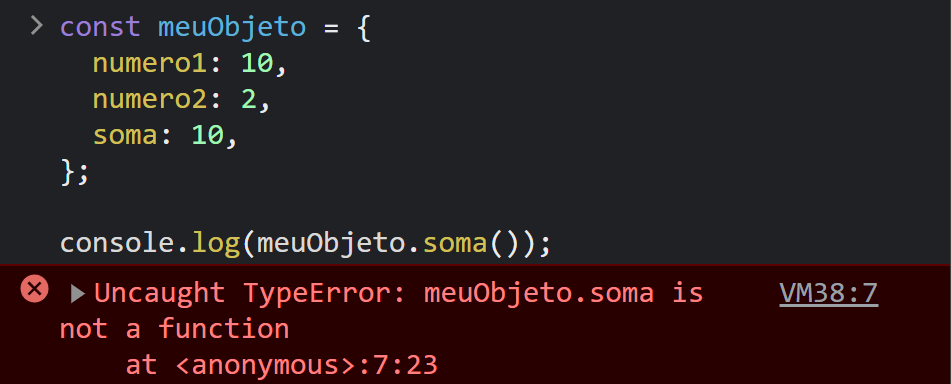

Bom momento!
Você é capaz?
Learn in public
- Learn in public - Swyx
- Você já sabe que nunca irá parar de aprender. Mas a maioria das pessoas “aprendem no privado”, e apenas observam.
- Consomem conteúdo sem produzir nada.
Como aprender em público?
O que você fará aqui é desenvolver um hábito de “criar aprendizado”
- Crie blogs, tutorias e passo-a-passo
- Apresente em meetups, techshots, eventos, etc...
- Pergunte e responda no Stackoverflow ou Reddit.
- Faça videos no Youtube ou Twitch.
Produza o conteúdo que você gostaria de ter encontrado quando você estava aprendendo
- Não se preocupe com engajamento, likes, etc...
- Faça o conteúdo para você mesmo de 3 meses atrás
- Reconhecimento é um bônus
Exemplo pessoal


Usando tecnologias a SEU favor
O JavaScript é maluco!
É apenas uma função que soma dois números...
E se?
O que é retornado?

Piorando as coisas...
O que é retornado?

Melhorando as coisas com Typescript
- Adiciona tipagem estática
- Não é uma linguagem diferente
- Suporte a orientação a objeto
- Melhor documentação
- Melhor autocompletar
- Bom para prevenir erros
Melhorando as coisas
Mesma coisa que antes, só que diferente...

Melhorando as coisas
Adicionando os tipos
Typescript === perfeição??
CI/CD
Integração contínua
Entrega contínua
"conjunto de práticas que permitem aos desenvolvedores criar, testar e lançar software de forma rápida e confiável."
Alguns exemplos
- Automatize testes, builds, deploy
- Basta você ter seu repositório no GitHub e escolher a forma e como você quer fazer o deploy
Mas como VOCÊ se beneficia com isso?
Crie seu próprio portfolio!
- Não importa se você é inimigo do CSS
- Não importa se você não faz a menor ideia de como começar
- Apenas comece!
Começando!
Astro
- Astro.build: O Astro constrói sites de conteúdo rápido, focado em conteúdo
- Suporte nativo ao Typescript
- Suporte a bibliotecas como React e Vue
- Documentação MUITO BOA
- Suporte nativo para conteúdos markdown
- Fácil e custo zero com deploy utilizando GitHub Pages
- Menos preocupação com estruturação
Chega de teoria
npm create astro@latest -- --template blog
- Mude conforme achar necessário!
- Faça o deploy!